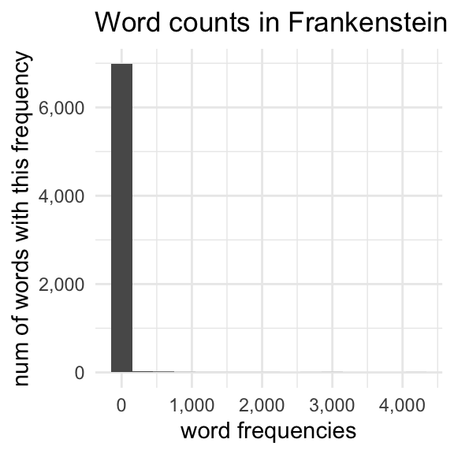

import numpy as npTerm-Document and Term-Context matrices
word vectors
Outline
Term-Document Matrices
Last time, we started looking at limited view of Term-Document matrices. Here we’ve got books in the rows, and the words monster and sea as the dimensions of the vector space.
Code to download and process books from Project Gutenberg.
import gutenbergpy.textget
from nltk.tokenize import RegexpTokenizer
from collections import Counter
from tabulate import tabulate
from os.path import exists
def getbook(book, outfile):
"""
Download a book from project Gutenberg and save it
to the specified outfile
"""
if exists(outfile):
pass
else:
print(f"Downloading Project Gutenberg ID {book}")
raw_book = gutenbergpy.textget.get_text_by_id(book)
clean_book = gutenbergpy.textget.strip_headers(raw_book)
if not outfile:
outfile = f'{book}.txt'
print(f"Saving book as {outfile}")
with open(outfile, 'wb') as file:
file.write(clean_book)
file.close()
def get_unigram_counts(path):
"""
Given a path, generate a counter dictionary of unigrams
"""
with open(path, 'r') as f:
text = f.read()
text = text.replace("\n", " ").lower()
unigrams = RegexpTokenizer(r"\w+").tokenize(text)
count = Counter(unigrams)
return(count)
def get_term_count(book_dict, term):
"""
return a list of the number of times a term has appeared
in a book
"""
out = [book_dict[book][term] for book in book_dict]
return(out)
mary_shelley_ids = [84, 15238, 18247, 64329]
mary_shelley_files = [f"gen/books/shelley/{x}.txt" for x in mary_shelley_ids]
mary_shelley_titles = ["Frankenstein", "Mathilda", "The Last Man", "Falkner"]
jules_verne_ids = [103, 164, 1268, 18857]
jules_verne_files = [f"gen/books/verne/{x}.txt" for x in jules_verne_ids]
jules_verne_titles = ["80days", "ThousandLeagues", "MysteriousIsland", "CenterOfTheEarth"]
foo = [getbook(x, f"gen/books/shelley/{x}.txt") for x in mary_shelley_ids]
foo = [getbook(x, f"gen/books/verne/{x}.txt") for x in jules_verne_ids]
shelley_words = {k:get_unigram_counts(v)
for k, v in zip(mary_shelley_titles, mary_shelley_files)}
verne_words = {k:get_unigram_counts(v)
for k, v in zip(jules_verne_titles, jules_verne_files)}
monster = ["monster"] + \
get_term_count(shelley_words, "monster") + \
get_term_count(verne_words, "monster")
sea = ["sea"] + \
get_term_count(shelley_words, "sea") + \
get_term_count(verne_words, "sea")
transpose = list(zip(mary_shelley_titles+jules_verne_titles, monster[1:], sea[1:]))
print(tabulate(transpose, headers=["book", "monster", "sea"]))| book | monster | sea |
|---|---|---|
| Frankenstein | 31 | 34 |
| Mathilda | 3 | 20 |
| The Last Man | 2 | 118 |
| Falkner | 2 | 31 |
| 80days | 0 | 52 |
| ThousandLeagues | 44 | 357 |
| MysteriousIsland | 8 | 277 |
| CenterOfTheEarth | 19 | 122 |
I call this a “limited” term-document matrix, since we’re only looking at the frequency of two hand-picked word dimensions. If we’d chosen some other words to serve as the dimensions, some of them will have very high counts, and others will be mostly 0. For example, the appears very frequently in all books, and illustration doesn’t appear at all in most of the books.
Code to generate the ‘the’, ‘illustration’ table.
the = [verne_words[book]["the"] for book in verne_words] + \
[shelley_words[book]["the"] for book in shelley_words]
illustration = [verne_words[book]["illustration"] for book in verne_words] + \
[shelley_words[book]["illustration"] for book in shelley_words]
titles = [book for book in verne_words] + [book for book in shelley_words]
print(
tabulate(
list(zip(titles, the, illustration)),
headers=["book", "the", "illustration"],
intfmt=","
)
)
| book | the | illustration |
|---|---|---|
| 80days | 4,715 | 1 |
| ThousandLeagues | 8,578 | 12 |
| MysteriousIsland | 17,003 | 0 |
| CenterOfTheEarth | 5,651 | 4 |
| Frankenstein | 4,195 | 0 |
| Mathilda | 2,214 | 0 |
| The Last Man | 11,494 | 0 |
| Falkner | 7,222 | 0 |
There’ also nothing particularly special about any two words chosen words in each book. Ideally we’d be representing each book with the entire word vector.
Getting the whole term-document matrix: python time
Right now, I have Counter dictionaries for each book stored like this:
# This is pseudocode
author_words = {
book: {w1: c1,
w2: c2,
...},
...
}To get the complete term-document matrix, I’m going to have to:
combine the words from each dictionary into one big set
get the count of each word in each dictionary.
I’ll then convert the lists I get into one big numpy matrix.
Note
There are some ways to make term-document matrices with the nltk or scikit-learn that don’t involve writing so much code, but they also don’t show how they work as explicitly as the code below. So for the purpose of teaching, I’m writing it all out long-hand.
First, I’ll get a list of the book titles, since this will be handy for making tables later on.
book_titles = [book for book in shelley_words] + [book for book in verne_words]
book_titles['Frankenstein', 'Mathilda', 'The Last Man', 'Falkner', '80days', 'ThousandLeagues', 'MysteriousIsland', 'CenterOfTheEarth']I need to get one big vocabulary that has just one entry per word that appears in all of the books. I’m using python sets to do this.
# Start with empty set
big_vocab= set()
# For every book in Shelley's works,
# get the Union of `big_vocab` and that book's vocabulary.
for book in shelley_words:
this_vocab = set(shelley_words[book].keys())
big_vocab = big_vocab.union(this_vocab)
# Repeat for Jules Verne
for book in verne_words:
this_vocab = set(verne_words[book].keys())
big_vocab = big_vocab.union(this_vocab)
# Convert the set to a list so that we can index it normally
big_vocab = list(big_vocab)
# Total vocab size:
print(f"The total vocabulary size is {len(big_vocab):,} words")The total vocabulary size is 24,681 wordsHere, I create a list of each word’s frequency in each book, then convert it all to a numpy matrix.
word_counts = []
for word in big_vocab:
document_vector = [shelley_words[book][word] for book in shelley_words] +\
[verne_words[book][word] for book in verne_words]
word_counts.append(document_vector)
word_matrix = np.array(word_counts)Let’s double check what this matrix looks like:
print(word_matrix)[[ 0 0 0 ... 0 2 0]
[ 0 0 1 ... 0 1 0]
[ 0 1 1 ... 0 1 0]
...
[ 0 2 0 ... 0 0 0]
[92 3 0 ... 0 0 0]
[ 7 1 0 ... 0 0 0]]word_matrix.shape(24681, 8)So, there are 24,681 rows, and 8 columns in the matrix. So 1 row for each word, 1 column for each book. We can double check that the numbers look like we expect by getting the indices for specific words, and slicing the term-document matrix:
example_words = ["the", "illustration", "monster", "sea"]
example_idx = [big_vocab.index(w) for w in example_words]print(word_matrix[example_idx, :])[[ 4195 2214 11494 7222 4715 8578 17003 5651]
[ 0 0 0 0 1 12 0 4]
[ 31 3 2 2 0 44 8 19]
[ 34 20 118 31 52 357 277 122]]
Sparse Matrix
Term-document matrices are almost always “sparse” matrices. “Sparse” meaning a lot of its values are 0. We can calculate how many cells of this matrix have counts greater than zero with some numpy tricks.
First, we say word_matrix>0, it will give us back a matrix of the same size, with True where the expression is true and False where the expression is false.
word_matrix>0array([[False, False, False, ..., False, True, False],
[False, False, True, ..., False, True, False],
[False, True, True, ..., False, True, False],
...,
[False, True, False, ..., False, False, False],
[ True, True, False, ..., False, False, False],
[ True, True, False, ..., False, False, False]])The nifty thing is that we can treat a numpy array of True and False like a matrix of 1 and 0 values, where True gets converted to 1 and False gets converted to 0. If we just use np.mean() on this True/False matrix, we’ll just get the proportion of values that are greater than 0!
np.mean(word_matrix>0)0.3449515821887282Only about 34% of all cells in the matrix have a count greater than 0! This is a matrix mostly of 0s.
What’s an important word for each document (tf–idf)?
We could start comparing documents with the cosine similarity of their word counts. Here’s how we’d do it for Frankenstein (index 0) and Around the world in 80 Days (index 4).
from scipy.spatial.distance import cosine
1 - cosine(word_matrix[:,0], word_matrix[:, 4])0.8759771803390621Looks like they’re very similar! But then, they would. For most of the words they have in common, those words are going to have very large frequencies.
| Frankenstein | |
|---|---|
| the | 4,195 |
| and | 2,976 |
| i | 2,846 |
| of | 2,642 |
| to | 2,089 |
| my | 1,776 |
| a | 1,391 |
| in | 1,128 |
| was | 1,021 |
| that | 1,018 |
| 80days | |
|---|---|
| the | 4,715 |
| and | 1,909 |
| of | 1,814 |
| to | 1,696 |
| a | 1,330 |
| in | 1,056 |
| was | 1,005 |
| he | 989 |
| his | 858 |
| fogg | 646 |
We want to treat frequent words in each document as important for characterizing that document, while at the same time not giving too much weight to words that are frequent in every document. In comes “tf–idf”.
Tf–idf
“Tf–idf” stands for “term frequency-inverse document frequency”. Annoyingly, the “–” in its name is a hyphen, so we’re not doing subtraction.
“Term frequency” is the frequency of each word within each document. It’s really just the word_matrix we’ve already made. Except we take the log-transform of the frequency.
We’ve looked at the log transform before, but just to remind you, it has the effect of squashing down the right side of a distribution, and stretching out the left side of a distribution.

But remember how most of the numbers in word_matrix are 0?
np.log10(0)-inf
<string>:1: RuntimeWarning: divide by zero encountered in log10So, what we do to fix this is add 1 to every value (yes, again) and take the log10 of that.
tf = np.log10(word_matrix + 1)Next, for every word we get a count of how many documents it appeared in. So, “the” appeared in all 8 books, so it will have a document frequency of 8. “Illustration” only appeared in 3 books, so it will have a document frequency of 3.
We can use another handy feature of numpy, and tell it to sum across the columns (axis=1)
df = np.sum(word_matrix > 0, axis = 1)
df.shape(24681,)dfarray([2, 2, 4, ..., 1, 3, 2])But the measure we use is inverse document frequency. For that, we actually do \(\frac{N}{df}\) where \(N\) is the total number of documents. And then, for good measure, we also take the log10 transform.
idf = np.log10(8/df)To get the tf-idf, we just multiply each book’s term frequency vector by the inverse document frequency vector.
tf_idf = tf * idf[:, np.newaxis]The upshot
After all of this, we have a measure for each word within each book that balances out its frequency in this book and its appearance frequency across all books.
| tf | idf | tf-idf |
|---|---|---|
| Frequent word in this book (large tf) | Appears in most books (small idf) | Mediocre tf-idf |
| Infrequent word in this book (small tf) | Appears in most books (small idf) | Very small tf-idf |
| Frequent word in this book (large tf) | Appears in very few books (large idf) | Large tf-idf |
The Results
Let’s explore these tf-idf values. First, we can get the indicies of the words in each book with the largest tf-idf values with .argmax(axis=0).
largest_tfidf = tf_idf.argmax(axis = 0)
largest_tfidf_words = [big_vocab[x] for x in largest_tfidf]| Frankenstein | clerval |
| Mathilda | mathilda |
| The Last Man | raymond |
| Falkner | falkner |
| 80days | fogg |
| ThousandLeagues | nautilus |
| MysteriousIsland | pencroft |
| CenterOfTheEarth | hans |
We can get the indicies of the top 5 using .argsort() like this:
top_five = (tf_idf * -1).argsort(axis = 0)[0:5, :]top_five_words = np.empty(shape = (5,8), dtype = 'object')
for i in range(top_five.shape[0]):
for j in range(top_five.shape[1]):
top_five_words[i,j] = big_vocab[top_five[i,j]]| Frankenstein | Mathilda | The Last Man | Falkner | 80days | ThousandLeagues | MysteriousIsland | CenterOfTheEarth |
|---|---|---|---|---|---|---|---|
| clerval | mathilda | raymond | falkner | fogg | nautilus | pencroft | hans |
| justine | _f | adrian | neville | passepartout | ned | harding | sneffels |
| safie | mathilda | perdita | osborne | phileas | conseil | neb | hardwigg |
| agatha | woodville | idris | boyvill | aouda | aronnax | spilett | saknussemm |
| dæmon | a_ | evadne | raby | detective | nemo | reporter | icelandic |
We can even calculate the cosine similarity of each book from every other book with these tf-idf vectors.
from scipy.spatial.distance import cosine
dists = np.empty(shape = (8,8))
for i in range(8):
for j in range(8):
dists[i,j] = 1-cosine(tf_idf[:, i], tf_idf[:, j])
print(tabulate(dists, headers=book_titles, showindex=book_titles,floatfmt=".2f"))| Frankenstein | Mathilda | The Last Man | Falkner | 80days | ThousandLeagues | MysteriousIsland | CenterOfTheEarth | |
|---|---|---|---|---|---|---|---|---|
| Frankenstein | 1.00 | 0.11 | 0.21 | 0.22 | 0.05 | 0.06 | 0.07 | 0.08 |
| Mathilda | 0.11 | 1.00 | 0.14 | 0.11 | 0.03 | 0.04 | 0.04 | 0.04 |
| The Last Man | 0.21 | 0.14 | 1.00 | 0.28 | 0.08 | 0.09 | 0.11 | 0.10 |
| Falkner | 0.22 | 0.11 | 0.28 | 1.00 | 0.07 | 0.07 | 0.08 | 0.08 |
| 80days | 0.05 | 0.03 | 0.08 | 0.07 | 1.00 | 0.11 | 0.10 | 0.07 |
| ThousandLeagues | 0.06 | 0.04 | 0.09 | 0.07 | 0.11 | 1.00 | 0.21 | 0.14 |
| MysteriousIsland | 0.07 | 0.04 | 0.11 | 0.08 | 0.10 | 0.21 | 1.00 | 0.17 |
| CenterOfTheEarth | 0.08 | 0.04 | 0.10 | 0.08 | 0.07 | 0.14 | 0.17 | 1.00 |
Term-context matrix
Term-document matrices can be useful for classifying and describing documents, but if we wanted to come up with vector representations to describe words, we need to build a term-context matrix. The basic intuition behind most vector-semantics draws from the Distributional Hypothesis (Harris 1954), which we can illustrate like this.
Try to come up with words that you think are likely to appear in the blank:
- The elderly __ spoke.
Now do the same thing with this phrase:
- The playful __ jumped.
You probably came up with different sets of words in each context. The idea here is that certain words are more likely to appear in certain contexts, and the more contexts two words share, the more similar they are.
A quick and dirty term-context matrix
We’ll build a quick and dirty term-context matrix with Frankenstein. Often people exclude “stopwords”, like function words at this stage.
with open(mary_shelley_files[0], 'r') as f:
text = f.read()
unigrams = RegexpTokenizer(r"\w+").tokenize(text.replace("\n", " ").lower())To build a term-context matrix, we basically look at a “concordance” of every word in the book. We set a context size of some number of words preceding and some number of words following the target word, and then pull those examples out. Let’s do that for “monster.”
context_size = 3
for idx in range(context_size, len(unigrams)-context_size):
if unigrams[idx] == "monster":
full_context = unigrams[idx-context_size : idx+1+context_size]
print(full_context)['wretch', 'the', 'miserable', 'monster', 'whom', 'i', 'had']
['to', 'behold', 'this', 'monster', 'but', 'i', 'feared']
['imagined', 'that', 'the', 'monster', 'seized', 'me', 'i']
['form', 'of', 'the', 'monster', 'on', 'whom', 'i']
['i', 'was', 'the', 'monster', 'that', 'he', 'said']
['fear', 'lest', 'the', 'monster', 'whom', 'i', 'had']
['remaining', 'friends', 'abhorred', 'monster', 'fiend', 'that', 'thou']
['in', 'reality', 'the', 'monster', 'that', 'i', 'am']
['i', 'then', 'a', 'monster', 'a', 'blot', 'upon']
['you', 'form', 'a', 'monster', 'so', 'hideous', 'that']
['only', 'a', 'detestable', 'monster', 'that', 'is', 'indeed']
['go', 'he', 'cried', 'monster', 'ugly', 'wretch', 'you']
['with', 'me', 'hideous', 'monster', 'let', 'me', 'go']
['and', 'let', 'the', 'monster', 'depart', 'with', 'his']
['promise', 'fulfilled', 'the', 'monster', 'would', 'depart', 'for']
['but', 'that', 'the', 'monster', 'followed', 'me', 'and']
['my', 'rage', 'the', 'monster', 'saw', 'my', 'determination']
['on', 'whom', 'the', 'monster', 'might', 'satisfy', 'his']
['fingers', 'of', 'the', 'monster', 'already', 'grasping', 'my']
['eyes', 'of', 'the', 'monster', 'as', 'i', 'first']
['me', 'and', 'the', 'monster', 'of', 'my', 'creation']
['happy', 'if', 'the', 'monster', 'executed', 'his', 'threat']
['magic', 'powers', 'the', 'monster', 'had', 'blinded', 'me']
['face', 'of', 'the', 'monster', 'he', 'seemed', 'to']
['their', 'cause', 'the', 'monster', 'whom', 'i', 'had']
['to', 'seize', 'the', 'monster', 'be', 'assured', 'that']
['cursed', 'and', 'hellish', 'monster', 'drink', 'deep', 'of']
['information', 'a', 'gigantic', 'monster', 'they', 'said', 'had']
['apparition', 'of', 'the', 'monster', 'seen', 'from', 'our']
['connected', 'such', 'a', 'monster', 'has', 'then', 'really']
['my', 'lips', 'the', 'monster', 'continued', 'to', 'utter']Here, we’ll call monster the target, or $w$, and every other word in the context a context word, or \(c\). To build a term-context matrix, we would need a row of the matrix to be dedicated to the word monster, and columns for every possible word that could occur around monster. We’d then go and add 1 to the relevant column each time we saw a word in the context of monster.
To do this in practice, we need to get a vocuabulary of unique words that appear in the book, and also convenient ways to convert a word string into an index, and a convenient way to convert an index to a word.
vocabulary = set(unigrams)
word_to_index = {w:idx for idx, w in enumerate(vocabulary)}
index_to_word = {idx:w for idx, w in enumerate(vocabulary)}Then, we need to create a matrix full of zeros with a row and column for each word in the vocabulary.
term_context = np.zeros(shape = (len(vocabulary), len(vocabulary)))Then, we just loop through the book, adding 1 to every cell where the target word (in the rows) appears in the context of another word (in the columns).
context_size = 3
for i in range(context_size, len(unigrams)-context_size):
word = unigrams[i]
word_index = word_to_index[word]
prewindow = unigrams[i-context_size : i]
postwindow = unigrams[i+1 : i+1+context_size]
context = prewindow + postwindow
for c in context:
c_index = word_to_index[c]
term_context[word_index, c_index] += 1Now, if the term-document matrix was sparse, this is super sparse.
np.mean(term_context>0)0.0044127177791784865Let’s get the 5 most common words that appear in the context of “monster”.
monster_idx = word_to_index["monster"]
monster_array = term_context[monster_idx, :]
top_five_monster_idx = (monster_array*-1).argsort()[0:5]
top_five_monster_word = [index_to_word[idx] for idx in top_five_monster_idx]
top_five_monster_word['the', 'i', 'that', 'of', 'me']At this stage, we could just use these raw counts to calculate the cosine similarity between words,
dist_from_monster = []
for i in range(len(vocabulary)):
dist_from_monster.append(cosine(monster_array, term_context[i, :]))monster_disr_arr = np.array(dist_from_monster)monster_sim = monster_disr_arr.argsort()[0:10]
monster_sim_word = [index_to_word[idx] for idx in monster_sim]
monster_sim_word['monster', 'on', 'which', 'from', 'fiend', 'and', 'in', 'towards', 'at', 'dæmon']Positive Pointwise Mutual Information
Similar problem as before, with words appearing very similar because very frequent words show up in a lot of contexts.
joint_prob = term_context/sum(term_context)
word_C = np.sum(term_context, axis = 1)
word_prob = word_C / sum(word_C)
context_C = np.sum(term_context, axis = 0)
context_prob =context_C/sum(context_C)
joint_exp = np.outer(word_prob, context_prob)
PMI = np.log2(joint_prob/joint_exp)<string>:1: RuntimeWarning: divide by zero encountered in log2PMI[PMI < 0] = 0monster_array = PMI[monster_idx, :]
dist_from_monster = []
for i in range(len(vocabulary)):
dist_from_monster.append(cosine(monster_array, PMI[i, :]))monster_disr_arr = np.array(dist_from_monster)
monster_sim = monster_disr_arr.argsort()[0:10]
monster_sim_word = [index_to_word[idx] for idx in monster_sim]
monster_sim_word['monster', 'let', 'accurate', 'denote', 'wretch', 'neck', 'hellish', 'behold', 'supposition', 'enjoy']Doing it not “by hand”
Tf-idf
In Python
The key function here is TfidfVectorizer
from sklearn.feature_extraction.text import TfidfVectorizer
from sklearn.metrics.pairwise import cosine_similarityThis is just info and a helper function to read in the data.
mary_shelley_ids = [84, 15238, 18247, 64329]
mary_shelley_files = [f"gen/books/shelley/{x}.txt" for x in mary_shelley_ids]
mary_shelley_titles = ["Frankenstein", "Mathilda", "The Last Man", "Falkner"]
jules_verne_ids = [103, 164, 1268, 18857]
jules_verne_files = [f"gen/books/verne/{x}.txt" for x in jules_verne_ids]
jules_verne_titles = ["80days", "ThousandLeagues", "MysteriousIsland", "CenterOfTheEarth"]all_files = mary_shelley_files + jules_verne_files
def read_and_normalize(path):
"""
will read a document and normalize its text
"""
with open(path, 'r') as f:
text = f.read()
text = text.replace("\n", " ").lower()
return(text)The important part: documents is a with 8 values in it. Each value is a string, and contains the entire text of each book.
documents = [read_and_normalize(path) for path in all_files]Line 1 sets up the rules we’re going to use for the tf-idf calculation. What TfidfVectorizer does by default does not match the math we did above, and even with these settings, it’s not going to be exactly similar.
vectorizer = TfidfVectorizer(smooth_idf = False, sublinear_tf = True)
tfidf = vectorizer.fit_transform(documents)The resulting tfidf matrix puts the books along the rows and the words along the columns.
tfidf.shape(8, 24645)cosine_similarity will do a rowwise comparison.
similarities = cosine_similarity(tfidf)
print(np.around(similarities, 3))[[1. 0.474 0.534 0.562 0.371 0.387 0.405 0.437]
[0.474 1. 0.429 0.442 0.299 0.314 0.316 0.351]
[0.534 0.429 1. 0.57 0.349 0.366 0.394 0.397]
[0.562 0.442 0.57 1. 0.364 0.363 0.385 0.4 ]
[0.371 0.299 0.349 0.364 1. 0.401 0.401 0.384]
[0.387 0.314 0.366 0.363 0.401 1. 0.506 0.464]
[0.405 0.316 0.394 0.385 0.401 0.506 1. 0.488]
[0.437 0.351 0.397 0.4 0.384 0.464 0.488 1. ]]# Looking at self-similarity
shelley_self = similarities[0:4, 0:4]
shelley_self[np.triu_indices(4, k = 1)].mean()0.5017177281427782# Looking at self-similarity
verne_self = similarities[4:8, 4:8]
verne_self[np.triu_indices(4, k = 1)].mean()0.44065120578921735# Looking at cross-similarity
cross_sim = similarities[0:4, 4:8]
cross_sim.mean() 0.36861403396731507In R
R
library(gutenbergr)
library(tidyverse)
library(tidytext)
library(lsa)(I’m using a special R package to access variables that I declared in python)
R
book_ids <- c(py$mary_shelley_ids, py$jules_verne_ids)
book_ids[1] 84 15238 18247 64329 103 164 1268 18857R
books <- gutenberg_download(book_ids)R
books %>%
group_by(gutenberg_id) %>%
unnest_tokens(input = text, output = words) %>%
count(gutenberg_id, words) %>%
ungroup() %>%
bind_tf_idf(words, gutenberg_id, n) -> books_tf_idfR
books_tf_idf %>%
group_by(gutenberg_id) %>%
arrange(desc(tf_idf)) %>%
slice(1:3) %>%
knitr::kable(digits = 3)| gutenberg_id | words | n | tf | idf | tf_idf |
|---|---|---|---|---|---|
| 84 | clerval | 59 | 0.001 | 2.079 | 0.002 |
| 84 | justine | 54 | 0.001 | 2.079 | 0.001 |
| 84 | elizabeth | 88 | 0.001 | 0.981 | 0.001 |
| 103 | fogg | 602 | 0.009 | 2.079 | 0.020 |
| 103 | passepartout | 404 | 0.006 | 2.079 | 0.013 |
| 103 | phileas | 256 | 0.004 | 2.079 | 0.008 |
| 164 | nautilus | 509 | 0.005 | 2.079 | 0.010 |
| 164 | ned | 322 | 0.003 | 2.079 | 0.006 |
| 164 | conseil | 274 | 0.003 | 2.079 | 0.005 |
| 1268 | pencroft | 1050 | 0.005 | 2.079 | 0.011 |
| 1268 | harding | 844 | 0.004 | 2.079 | 0.009 |
| 1268 | neb | 455 | 0.002 | 2.079 | 0.005 |
| 15238 | _f | 67 | 0.001 | 2.079 | 0.003 |
| 15238 | mathilda | 56 | 0.001 | 2.079 | 0.002 |
| 15238 | mathilda | 55 | 0.001 | 2.079 | 0.002 |
| 18247 | raymond | 340 | 0.002 | 2.079 | 0.004 |
| 18247 | adrian | 285 | 0.002 | 2.079 | 0.003 |
| 18247 | idris | 230 | 0.001 | 2.079 | 0.003 |
| 18857 | hans | 171 | 0.002 | 2.079 | 0.004 |
| 18857 | uncle | 485 | 0.006 | 0.693 | 0.004 |
| 18857 | sneffels | 52 | 0.001 | 2.079 | 0.001 |
| 64329 | falkner | 432 | 0.003 | 2.079 | 0.006 |
| 64329 | neville | 277 | 0.002 | 2.079 | 0.004 |
| 64329 | elizabeth | 470 | 0.003 | 0.981 | 0.003 |
R
frank <- books_tf_idf %>% filter(gutenberg_id == 84) %>% pull(tf_idf)R
books_tf_idf %>%
ungroup() %>%
complete(gutenberg_id, words, fill=list(tf_idf = 0)) %>%
arrange(words) -> tf_idf_completeR
tf_idf_complete %>%
filter(gutenberg_id == 84) %>%
pull(tf_idf) -> frank_vectorR
tf_idf_complete %>%
filter(gutenberg_id == 103) %>%
pull(tf_idf) -> eighty_vectorR
cosine(frank_vector, eighty_vector) [,1]
[1,] 0.005146954References
Harris, Zellig S. 1954. “Distributional Structure.” WORD 10 (2-3): 146–62. https://doi.org/10.1080/00437956.1954.11659520.